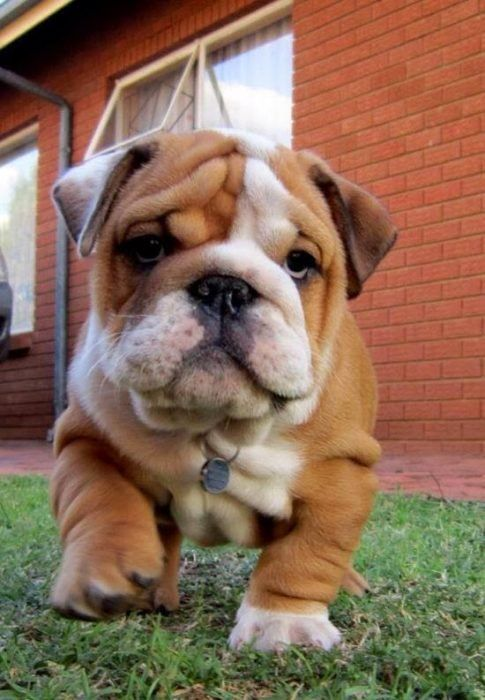

¿Qué es Huellitas Comunitarias?
Huellitas Comunitarias es un proyecto PAEC que busca fomentar la protección y el bienestar animal mediante acciones que beneficien a nuestra comunidad.
Queremos crear conciencia sobre la importancia de cuidar a los animales, evitar el abandono y promover una convivencia respetuosa.
¿Por qué debemos cuidar a los animales?
Las mascotas necesitan alimento, agua limpia, un lugar seguro, atención veterinaria y cariño. Cuidarlas es una responsabilidad que debemos asumir todos los días.

¡Haz la diferencia!
Puedes ayudar compartiendo información, denunciando el maltrato ante las autoridades correspondientes y enseñando a otras personas a respetar a los animales.